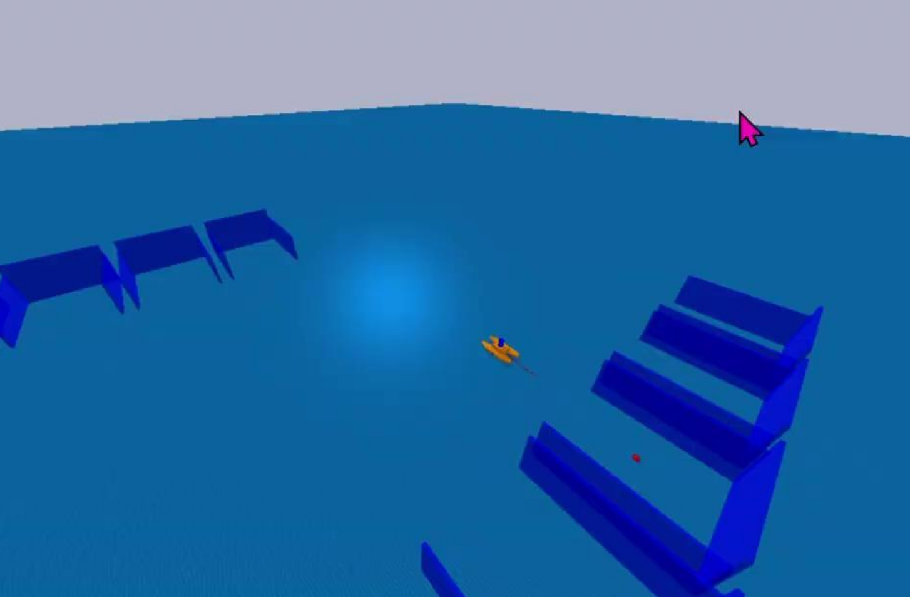

Docking of Autonomous Surface Vehicles
Project Overview
This project focuses on developing autonomous docking capabilities for surface vessels. Docking is one of the most challenging maneuvers for autonomous vessels due to the precision required and the complex environmental factors involved. Our approach combines learning-based methods with model predictive control to achieve robust and efficient docking operations.
Simulation Environment

The docking simulations were conducted using a PyBullet-based simulation environment, which provides physics-based modeling and visualization capabilities. The environment incorporates several key features designed to replicate realistic vessel docking scenarios.
Vessel Dynamics
The surface vessel is modeled as a fully actuated rigid body operating in 3 degrees of freedom (surge, sway, and yaw). The state vector is defined as:
\[ \mathbf{q}_i = \begin{bmatrix} \mathbf{\eta}_i^T & \mathbf{\nu}_i^T \end{bmatrix}^T = \begin{bmatrix} x_i & y_i & \psi_i & u_i & v_i & r_i \end{bmatrix}^T \]
where the state vector is a combination of the 2D pose
\[ \eta = \begin{bmatrix} x & y & \psi \end{bmatrix}^T \]
and the velocity vector
\[ \nu = \begin{bmatrix} u & v & r \end{bmatrix}^T \]
in body-fixed coordinates.
The dynamic model of the vessel used in running simulations is given by:
\[ M\dot{\nu} + C_{RB}(\nu)\nu + N\nu = \tau_c + \tau_d \]
\[ \dot{\eta} = J(\psi)\nu \]
The mass matrix \( M \), the Coriolis matrix \( C_{RB}(\nu) \), and the damping matrix \( N \) include the system parameters. The input vector is denoted by \( \tau_c \), and the disturbance vector is denoted by \( \tau_d \). The disturbance vector \( \tau_d \) is set to zero for simplicity for this study. The kinematic equation describes the transformation of the body-fixed velocity into local coordinates as a function of the rotation matrix \( J(\psi) \). The action input vector has 4 thrust values which helps the vessel to move in all 3 degrees of freedom.
Physical Environment
The simulation environment consists of a water surface rendered with realistic textures and a docking bay structure. The docking bay is modeled with precise physical dimensions:
- Dock width: 4 meters
- Wall thickness: 0.1 meters
- Safety clearance zone: 3.5 meters from center
The dock structure includes three primary walls forming a U-shaped berthing area, with wall positions precisely defined relative to the dock center position (10.0, -5.0, 0.0) in the global coordinate frame.
Sensor Simulation
The simulation includes realistic sensor modeling of 2D LiDAR System. A 360-degree LiDAR sensor is simulated with the following specifications:
- Angular resolution: 0.1 degrees (3600 rays)
- Maximum range: 50 meters
- Update rate: 5 Hz
- Gaussian noise with σ = 0.1 meters
Collision Detection
The environment implements a collision detection system that monitors:
- Contact points between vessel corners and dock walls
- Dynamic safety zones with critical (0.25m) and warning (0.5m) thresholds
- Real-time collision state feedback for termination conditions
Technical Implementation
Our docking system was implemented using Model Predictive Path Integral (MPPI) control in a fully actuated surface vessel. The implementation consists of several key components:
Environment Simulation
We developed a custom environment in PyBullet simulator that includes:
- Realistic water dynamics and vessel physics
- Configurable dock structures with various geometries
- Simulated 2D LiDAR sensor for dock detection
- Environmental disturbances (wind, currents) for robustness testing
Dock Detection and Segmentation
The dock detection pipeline processes LiDAR point clouds through several stages:
- Clustering: DBSCAN (Density-Based Spatial Clustering of Applications with Noise) algorithm groups LiDAR points into meaningful clusters
- Segmentation: Gaussian Mixture Models (GMM) separate the dock structure from other environmental features
- Wall Orientation: RANSAC (Random Sample Consensus) algorithm identifies the three dock walls and calculates their orientations
- Docking Point Estimation: The intersection of walls is used to determine optimal docking points
MPPI Cost Function for Docking
The MPPI controller uses a specialized cost function designed specifically for the docking task:
\begin{equation} \begin{split} C_{\text{total}} = & C_{\text{dock\_goal}} + C_{\text{velocity}} + C_{\text{dock\_heading}} + \\ & C_{\text{goal\_ori}} + C_{\text{dock\_clear}} + C_{\text{dock\_entrance}}. \end{split} \end{equation}
Each component of this cost function serves a specific purpose:
- Dock Goal Cost (Cdock_goal): Penalizes distance from the vessel to the target docking position
- Velocity Cost (Cvelocity): Ensures appropriate approach velocity, slowing down as the vessel nears the dock
- Dock Heading Cost (Cdock_heading): Aligns the vessel with the dock orientation
- Goal Orientation Cost (Cgoal_ori): Ensures the vessel reaches the final docking position with the correct orientation
- Dock Clearance Cost (Cdock_clear): Prevents collisions with the dock walls during approach
- Dock Entrance Cost (Cdock_entrance): Guides the vessel through the entrance of the dock in a controlled manner
Controller Implementation
The MPPI controller generates optimal trajectories by:
- Sampling thousands of potential control sequences
- Simulating the resulting trajectories
- Evaluating each trajectory using the cost function
- Computing a weighted average of control inputs, favoring lower-cost trajectories
- Applying the first control input and repeating the process at the next time step
Key Features
- Robust to environmental disturbances (wind, current, waves)
- Adaptive to different dock configurations
- Real-time performance on embedded hardware
- Safety mechanisms to prevent collisions
- Integration with existing navigation systems
Technical Specifications
- Platform: Catamaran ASV with X-configuration thrusters
- Sensors: LiDAR, Stereo Camera, IMU, GPS
- Computing: NVIDIA Jetson Xavier NX
- Software: ROS2, PyTorch, OpenCV
Publications
-
Learning Autonomous Docking Operation of Fully Actuated Autonomous Surface Vessel from Expert data
A Vijayakumar, MA Atman, A Somayajula
OCEANS 2024-Halifax, 1-5 -
Model Predictive Path Integral Docking of Fully Actuated Surface Vessel
A Vijayakumar, A Somayajula
arXiv preprint arXiv:2501.09668